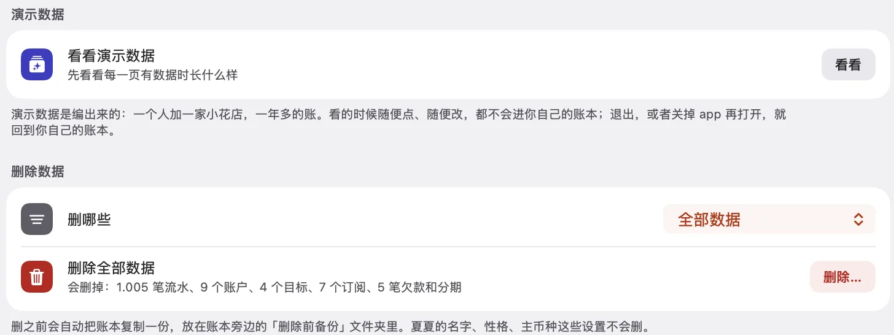

Changelog
What changed in each version, in plain words. The installed app shows a reminder in the bottom-left corner when a new version is out; one click updates it.

Business mode, a polished interface and safer syncing
Shop owners can keep home and business apart; the Mac interface has been refined from end to end; editing on iPhone and Mac at the same time no longer overwrites changes.
- New business mode: switch between “Life | Business” at the top of the sidebar. See what the shop really earned this month, log each day’s takings after closing, let rent and wages be recorded automatically, and see when your start-up costs are paid back. Accounts are kept apart, and money you take home can be logged too.
- The Mac interface has been refined to Apple’s design guidelines: easier-to-hit buttons, colours that follow Life (orange) or Business (teal), clearer dark mode, every button reachable with Tab, hover feedback and a layout that holds up in narrow windows.
- In transaction details “Edit” comes first, copy and split live under ⋯ and delete is last; instalments can record this month’s payment or be paid off early.
- Xiaxia now has one character with 7 looks to choose from; AI tips on each page are tucked away by default for a cleaner view.
2 more changes
- Safer bookkeeping: changes made on iPhone and Mac at the same time no longer overwrite each other, undo only undoes your own step, deleting data asks once more, and renaming a goal keeps the money saved in it.
- The iPhone app got the same polish; amounts no longer break apart at large text sizes.
Earlier versions
0.2.5Golden piggy bank, quick entry on your phone, one-click AI connection
The Goals page is now a golden piggy bank; on your phone you can jot down an entry, snap a receipt and track expense claims; connecting an AI takes one click.
- The Goals page is rebuilt as a golden piggy bank: 1 main goal plus up to 3 small ones. Xiaxia works out how much to save each day and when it’ll be yours. Saving, resisting a purchase or taking money out all happen by tapping the piggy.
- Quick entry on your phone: open and add an entry, snap a receipt, and use the new Expense claims page to see what’s not submitted and what’s waiting to be paid. iPhone and Mac sync automatically through iCloud.
- The Trends page now answers “if I keep spending like this”: roughly how much is left at month end and year end, and how much more you’d have by halving a few categories.
- Connecting an AI is easier: each AI has a Connect button that then tests whether it can read the ledger. For other AIs, copy one prompt and it sets itself up.
- After an update the app tells you what changed and checks for new versions every time it opens. The website has a release notes page, and English and Spanish versions.
- The interface now starts to support English and Spanish, under Settings → Privacy & appearance → Language. Chinese remains the default, and a few places such as Xiaxia’s comments aren’t translated yet.

Goals page: the piggy bank for the main goal “New laptop”, with three small goals below (sample data) 
Trends page: if you keep spending like this, roughly what's left at the end of the month and the year (sample data) 
Connect your AI: each AI has its own Connect button and shows whether it's connected (example) 0.2.4Net worth page redesigned: see what you can freely spend right now
Open Net worth and the biggest number is the money you can freely spend today, plus how many months it would last.
- The biggest number is “free to spend now”: total savings minus what the shop needs, what you keep saved and what you owe. The rest is yours.
- Below it you see how many months that money lasts, based on your own monthly spending; with a business ledger only personal spending counts.
- Total savings is now one thick coloured bar, one colour per part, with small cards below listing the accounts and goals behind each part.

Net worth page: the big number is what you can spend freely, with a coloured bar splitting up your money (sample data) 0.2.3New “Data” section in Settings: try a demo, delete data, restore from a backup
See what every page looks like with data before you log anything; deleting always makes a backup first, so a mistake can be undone.
- Demo data: explore every page with a made-up year of entries. Click and edit freely; leave the demo and your own ledger is back.
- Delete data: remove just part of it or everything. A copy of the ledger is saved first.
- Restore from a backup: pick one of the copies kept before updates and before deletions.

The Data section in Settings: try sample data, delete data (sample data) 0.2.2Spending, Trends and Net worth redesigned; new Goals, Subscriptions and Debts & instalments pages
The money pages were laid out again to fit on one screen, and three new pages look after savings goals, subscriptions and debts.
- Spending now compares with last month; switch between pie and bars in one click.
- New month picker: see at a glance which months were heavy or light, and jump there with a click.
- Goals shows whether you're saving fast enough, Subscriptions finds the ones wasting money, and Debts & instalments sorts what you owe and what you're owed.
- Logging from a photo of a receipt uses the date on the receipt instead of today.

Spending page: this month next to last month (sample data) 0.2.1Xiaxia now has a boy version, and remembers your habits
On first launch you can pick the girl or boy set and name your assistant; Xiaxia has also started keeping notes.
- Xiaxia and the three companions have a boy version. Choose on first launch and change it any time in Settings.
- You can rename the assistant and change what it calls you.
- Xiaxia's memory: it keeps the rules you set and your habits. See and edit them in Settings → Xiaxia's memory.
- A new app icon: Xiaxia's face.

0.2.0The first version you can download
Download it straight from the website. It is notarised by Apple, so a double-click opens it, and the app tells you when a new version is out.
- Download the dmg from the website and drag it to Applications.
- First launch walks you through connecting your own AI (Claude, Codex and others); to log something, just tell it.
- When a new version is out you get a reminder in the bottom-left corner; one click updates, and the ledger is backed up first.